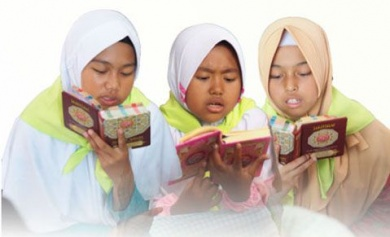
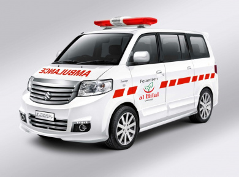
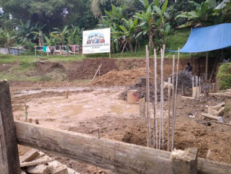
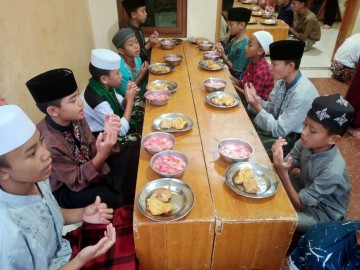
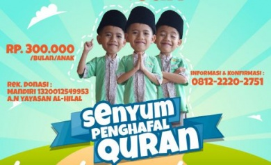

Yayasan Bersama
Pesantren Al Hilal adalah lembaga sosial yang mengasuh, merawat, mendidik dan membina anak-anak yatim
sejak tahun 2004 hingga sekarang.

Program
Kakak Asuh
Program kakak asuh adalah program dari kakak yang senantiasa peduli, melindungi dan
membantu adik-adiknya

Wakaf Ambulan
Pengadaan wakaf ambulance gratis ini diharapkan dapat membantu sesama manusia dengan cara
meringankan beban mereka.

Wakaf Semen Untuk
“Barangsiapa membangun masjid karena Allah, kecil atau besar, maka Allah membangun baginya
rumah di surga”.

Berbagi Buka Puasa Sunnah Untuk Santri Yatim
Setiap hari senin dan kamis para Santri Yatim Penghafal Quran di Pesantren al-Hilal selalu
melaksanakan puasa sunnah.

Orangtua Asuh
Kami mengajak ayah/bunda/kakak untuk ikut berpartisipasi menjadi Orang Tua Asuh Santri
Yatim Penghafal Quran